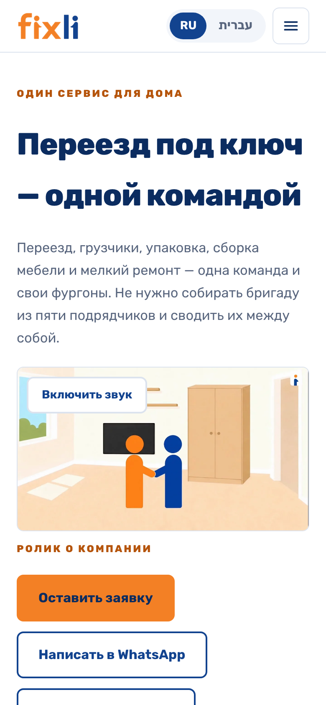
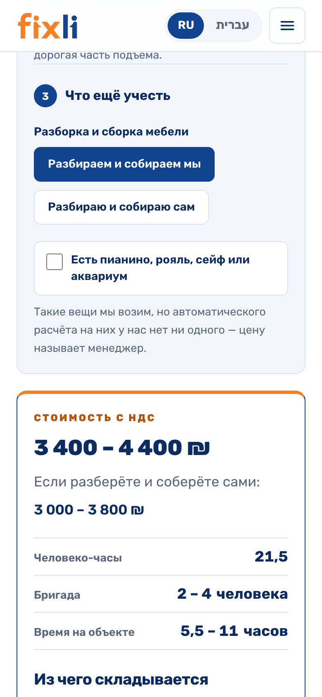
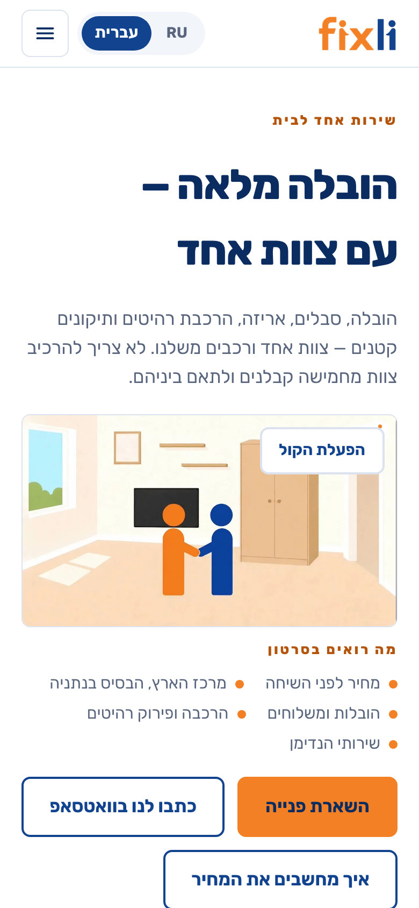

Что решить
По порядку — от того, что включает больше всего, к тому, что можно отложить.
Реальные фотографии работ
0 ₪
снимает кто угодно · с телефона
Погрузка, фургон, бригада в работе, «до и после» — лучше снятые аккуратно и при
свете, а не на бегу. Это самая дорогая из открытых строк: без фотографий
не рендерится блок «Наши работы» на сайте, пустует половина страницы знакомства,
а рекламные макеты идут с рисованными заглушками. Клиент в этой нише выбирает
по фотографиям настоящих работ — их нельзя заменить текстом.
Что нужно поимённо: десять снимков упаковки от Игоря (стол в стрейче,
квартира до выноса, та же квартира в машине — сюжеты он назвал сам), три снимка
команды от Димы. И единая форма бригады: своей же архив Игорь забраковал
словами «кто-то в синей футболке, кто-то в зелёной» — значит два кадра из
съёмочного листа без формы дадут ровно то, что забраковано. Цвет, вид и срок
формы — решение за вами.
Включить автоответ в WhatsApp
0 ₪, сегодня
Игорь · 20 минут · документы не нужны
Бесплатное приложение WhatsApp Business ставится на рабочий номер и не требует ни юрлица, ни регистрации: внутри включаются приветствие, ответ вне рабочих часов и быстрые ответы на частые вопросы. Тексты написаны и лежат готовыми. Это самая дешёвая из всех строк списка и она закрывает главную дырку — сейчас медиана первого ответа клиенту 76 дней.
Документ о регистрации
0 ₪, нужен документ
Игорь · один раз
Название у вас есть — Fixli. Не хватает документа о регистрации: полное юрлицо не обязательно, достаточно «осек». Важно, как название записано в документе: Google и Meta сверяют буква в букву, а осек часто оформлен на человека. Документ открывает три вещи: 1) политику конфиденциальности на сайте — по закону там указано, кто собирает данные заявок; 2) карточку в Google Maps — бесплатный поток из поиска и карт; 3) WhatsApp внутри пункта управления — не приложение из строки выше, а канал, где опрос идёт сам и заявка сразу попадает в базу. Плюс отдельная SIM-карта: номер, подключённый к API, перестаёт работать в обычном WhatsApp — личный отдавать туда нельзя. Наряды и рабочий чат этого не ждут: они в Telegram и документов не требуют.
Носитель иврита на вычитку
2–3 часа работы
знакомый или фрилансер
Ивритскую половину сайта написал разработчик. В нише, где чужие люди приходят в квартиру, кривой иврит убивает доверие быстрее всего остального.
Сервер: кто платит и какого размера
$39 или $62 / мес
решение до 13 сентября
Машина взята и работает с 14 августа — панель открывается с телефона, захват чата
и расшифровка голосовых идут на ней, ночные копии делаются сами. Первый месяц
закрыт промо-кодом, и он кончается около 13 сентября.
Размер можно уменьшить вдвое. Машину брали с запасом под расшифровку
голосовых «на глаз»; 18 августа я померил её под настоящей нагрузкой — пик
занятой памяти 2,2 из восьми гигабайт, и самое тяжёлое место это не работа
панели, а расшифровка, которой нужно меньше десяти минут в сутки. Значит
вдвое меньшая машина работу выдерживает: $39 вместо $62, около $276
в год. Уменьшение занимает пятнадцать минут и одну перезагрузку.
Открытых вопроса два: оставляем запас или уменьшаем, и кто за это платит —
вторая половина разговора о формате работы.
Формат работы и оплата
договориться
все трое
Разговор сдвинулся 14 августа: обсуждаем не оплату за отдельные продукты, а зарплату плюс привязку к обороту. Цифру не называла пока ни одна сторона. От этого же зависит, кто платит за сервер и за AI, когда он понадобится.
Три строки из прошлого отчёта закрылись — и ни одна не требовала вашего участия.
Адрес сайта куплен. fixlihome.co.il оплачен 13 августа на год
вперёд, второй домен решили не брать. Денег с вас он не потребовал, из списка
решений строка ушла. Сейчас он застрял у регистратора на проверке документа
владельца — это их процедура, тикет заведён, срок ответа истекает 21 августа.
Как отдадут — сайт переезжает на него в тот же день, и с него снимается запрет
показываться в поиске.
Сервер взят и работает. Пункт управления открывается из интернета с любого телефона, захват рабочего чата больше не зависит от того, включён ли мой компьютер. Осталось только решение про размер и оплату — карточка выше.
Заявка с сайта доезжает до базы. Форма перестала быть письмом в мессенджер: обращение создаётся в системе вместе с источником, а сообщение в чат осталось запасным путём. Это и есть та строка отчёта, которая отвечает, окупается ли реклама.
Что уже можно потрогать
Сайт живёт в интернете и обновляется сам при каждой правке. Можно зайти с телефона, посмотреть ролик о компании, посчитать свой переезд по списку вещей и пройти заявку до конца. Не хватает ему одного — своего адреса: служебная ссылка не годится для рекламы и закрыта от поисковиков, но работает на ней всё.
Открыть сайт и посчитать переезд
Ниже — те же экраны снимками, на телефоне 390 точек шириной: так сайт увидят почти все, кто придёт.





Рядом с сайтом появились ещё две вещи, которые тоже можно открыть.
Страница знакомства. Отдельный короткий путь для того, кто написал в WhatsApp: первым сообщением ему приходит ссылка, и за две минуты он видит доказательства — двенадцать настоящих рекомендаций из Facebook, ролик, ответ про бережную упаковку — и возвращается в тот же чат кнопкой. Задачу ставил Игорь голосовыми 15 августа, страница собрана и работает; ждёт она тех же фотографий и адреса сайта: ссылка на служебный домен в первом же сообщении бьёт по доверию, ради которого всё и делается.
Брендбук с фирменным стилем. Открывается по ссылке и отправляется подрядчику как есть: правила знака, цвета, шрифт, готовые макеты для оклейки фургона, футболок, визиток и документов, двадцать четыре рекламных макета. Из него же взято всё, что вы видите в этом отчёте.
Два пути к цене — и одна цена
Клиент может спросить нас, а может посчитать сам. Обе дороги на сайте открыты, и обе заканчиваются одним числом.
Опрос — главный вход
в меню «Рассчитать стоимость»
- Семь вопросов до цифры, и это потолок: что нужно, города, размер квартиры, вещи по списку, коробки, подъезды, кто разбирает мебель.
- Цена появляется до того, как мы спросим телефон, — уйти с ней можно молча.
- Дальше сам собой становится заявкой: дата календарём, контакты, расчёт уезжает менеджеру вместе с ответами.
- Считает не только переезд: одна-две вещи, хендимен и «другое» тоже ведут к ответу, хотя там честно говорим, что сумму назовёт человек.
Калькулятор — отдельная страница
для тех, кто хочет покрутить цифры сам
- Ни одного вопроса о человеке: размер квартиры, вещи, коробки, этажи, разборка.
- Сумма меняется на глазах, пока двигаешь числа, — видно, из чего она сложилась: человеко-часы, размер бригады, время на объекте.
- Только переезд. Заявку не просит: расчёт можно унести в опрос или в WhatsApp.
- В меню его нет намеренно — два входа в одно место сбивают. Приходят по ссылкам с главной и из самого опроса.
Обе считают одной формулой, и это проверено машиной, а не на глаз. Сверка проходит опрос и калькулятор на всех пяти размерах квартиры и сравнивает то, что видит клиент: суммы совпадают до шекеля. Она прогоняется перед каждым выходом сайта в интернет — разойдутся однажды, и такая правка просто не выкатится. С 17 августа тем же кодом считает и Telegram-бот, поэтому три поверхности физически не могут назвать за одну квартиру три цены.
Как это устроено внутри
Шесть направлений. Все собраны, все ждут чего-то не от меня.
Сайт с калькулятором
работаетДевять услуг, две локали, отзывы настоящих клиентов, ролик о компании на первом экране. Цену клиент узнаёт одним путём: «Рассчитать стоимость» в меню → опрос → сумма; калькулятор остался отдельной страницей для тех, кто хочет покрутить цифры сам. С 17 августа он считает по вещам, а не по комнатам — так, как считает Игорь: диван и картина это десять минут, шкаф-купе — полтора часа, и в прежней формуле они стоили одинаково.
Ждёт: свой адрес и фотографии — вместо рисованных заглушек.
Пункт управления
работает из интернетаЧетырнадцать экранов: звонок → обращение с обязательной пометкой «откуда узнали» и кодом объявления → заказ → наряд грузчику в Telegram → его отчёт с фотографиями → таблица «источник → обращений → заказов → сумма». Открывается с телефона по адресу, вход — кодом в Telegram, без паролей. Первый экран показывает не меню разделов, а то, что горит сегодня.
Ждёт: первого входа Игоря. Инструкция готова и отправляется одним сообщением; пока он не вошёл, уведомления о клиентах копятся — Telegram не даёт боту написать первым тому, кто ему ни разу не писал.
Захват рабочего чата в Telegram
работаетБот сохраняет сообщения рабочего чата, а голосовые превращает в текст на своей машине, без отправки куда-либо наружу. Работает круглосуточно на сервере с 14 августа. Согласие спрашивали у всех четверых участников.
Ждёт: повторного согласия участников — текст объявления с тех пор менялся, и спросить об этом должен человек, а не бот.
Первичный ответ клиенту
бот доводит до ценыТексты автоответа WhatsApp написаны: приветствие, ответ вне часов, пять быстрых ответов и список того, чего обещать нельзя. А в Telegram уже работает бот, который сам проводит клиента по опросу кнопками, показывает ту же вилку, что сайт (цифра физически не может разойтись — считает один и тот же код), принимает фотографии и передаёт всё менеджеру.
Ждёт: двадцати минут на телефоне для автоответа. Ссылку на бота мы пока не даём никому: он обещает ответ человека, а человек смотрит в панель, в которую ещё не заходил.
Реклама
тексты написаныТринадцать готовых объявлений на русском и иврите плюс девять брифов под съёмку: переезд, хендимен, сборка мебели, грузовое такси. Двадцать четыре макета в фирменном стиле собраны. Каждое утверждение сверено с тем, что вы говорили: чего не подтверждали — того в объявлении нет.
Ждёт: фотографии, вычитку иврита и права администратора на странице Facebook. Пошаговая инструкция, как их выдать, написана и уйдёт отдельным сообщением.
Фирменный стиль
выложен ссылкойБренд у компании был, а правил не было: знак, фургон и визитка сделаны разными людьми в разное время. Теперь есть брендбук — цвета, шрифт, правила знака, съёмочный лист — и готовые макеты: оклейка фургона в долях от высоты борта (марки машин нам не называли, подрядчик мерит рулеткой), футболки, визитки, восемь документов на двух языках. Плюс ролик о компании на сорок пять секунд.
Ждёт: вашего «да» на форму бригады и решения, печатаем ли визитки.
Как замыкается цепочка
Шесть звеньев: от «клиент нас нашёл» до «его цена вернулась обратно в калькулятор». Слева у каждой строки стоит состояние — есть значит работает сейчас, ждёт значит написано и упирается в один шаг, план значит решено делать, но кода ещё нет. Ни одного «скоро».
Клиент нас находит
- есть Сайт: девять услуг, две локали, тридцать четыре страницы, отзывы настоящих клиентов, ролик о компании
- есть Расчёт цены — один вход, а не два: в меню «Рассчитать стоимость», дальше опрос, и цена появляется до того, как мы спросим телефон
- есть Калькулятор считает по вещам: тридцать позиций в шести комнатах, у холодильника, телевизора и стола — свои виды
- есть Страница знакомства: короткий путь из WhatsApp, двенадцать рекомендаций доказательствами и кнопка обратно в тот же чат
- ждёт Реклама: тринадцать объявлений написаны — нужны фотографии, вычитка иврита и права на странице Facebook
- ждёт Карточка в Google Maps: бесплатный поток из поиска и карт, нужен документ о регистрации
Клиент написал — и его услышали в первую минуту
- есть Тексты автоответа: приветствие, ответ вне часов, пять быстрых ответов, список запрещённых обещаний
- ждёт Установки приложения WhatsApp Business: 20 минут на телефоне, документы не нужны
- есть Telegram-бот с тем же опросом: ведёт кнопками, показывает ту же цену, что сайт, принимает фотографии и передаёт менеджеру
- ждёт WhatsApp внутри панели: документ и отдельная SIM-карта под рабочий номер
Обращение попадает в базу — и всегда с источником
- есть Приём обращения за двадцать секунд с телефона; «откуда узнали» — поле, которое нельзя пропустить
- есть Сказанное в рабочем чате превращается в обращение одним нажатием
- есть Захват чата: сообщения сохраняются, голосовые превращаются в текст на своей машине
- есть Заявка с сайта попадает прямо в базу вместе с источником; сообщение в рабочий чат осталось запасным путём
- есть Код объявления заносится руками при звонке — иначе весь поток из WhatsApp выглядит как «Facebook» и не говорит, какое размещение окупилось
Обращение становится заказом
- есть Заказ создаётся из обращения одним действием — второго входа «просто заказ» нет намеренно
- есть В карточке заказа видно, из какого обращения он вырос и с какой рекламной меткой
- есть Карточка клиента: его заказы, обращения и отзывы одним списком по времени
Заказ доходит до грузчиков
- есть Доска недели, наряд, назначение работника
- есть Наряд приходит грузчику в Telegram, и оттуда же он отчитывается фотографиями
- план Задачник в мини-аппе: смена списком, отметки по ходу работы, фотографии в конце. Ни пароля, ни справочников — вход тем же Telegram
Круг замыкается: обратно к клиенту и в систему
- есть Отчёт «источник → обращений → заказов → сумма», а над строками — подытог по каждому объявлению: сколько принесло именно оно
- ждёт Запись отзыва: место в базе есть, экрана нет намеренно — отзывы должен собирать агент постпродажи, и он идёт следующим после рекламы
- план Фактическая сумма закрытого заказа возвращается в калькулятор и уточняет формулу — то самое доучивание на живых сделках
Что даёт замкнутый круг, когда он замкнётся целиком. Каждое звено по отдельности — удобство. Вместе они дают три вещи, которых сейчас нет ни у вас, ни у конкурентов в центре Израиля.
Видно, какой рекламный шекель вернулся. Источник, поставленный при обращении, доезжает до суммы заказа — и в конце месяца видно не «реклама работает», а сколько принёс каждый канал.
Цена перестаёт зависеть от того, кто считал. Сейчас каждый заказ считается на глаз, и два похожих переезда могут разойтись в полтора раза. Круг «расчёт → факт → поправка в формуле» превращает опыт в число, которое клиент видит на сайте сам.
Обращения перестают теряться. Не потому, что кто-то стал внимательнее, а потому что обращение фиксируется там же, где живёт разговор: в чате, в WhatsApp, на сайте.
Какими каналами это работает
Два мессенджера с разными ролями — не потому, что так вышло, а потому что у них разные сильные стороны.
Внутри компании — Telegram
работаетРабочий чат уже там, и бот в нём с 9 августа: сохраняет сообщения, голосовые превращает в текст, круглосуточно и на сервере. Наряды грузчикам и отчёты с фотографиями написаны и включатся, как только работники нажмут «Начать» — каждый делает это сам, Telegram не даёт боту написать первым. Здесь Telegram сильнее: боты, личные чаты, мини-приложения и отметки о выполнении делаются как надо и без чужих разрешений. Ни документов, ни отдельного номера не требует вообще.
С клиентами — WhatsApp
тексты готовыВ Израиле пишут в WhatsApp почти все, и спорить с этим бессмысленно: главный канал обращений — он. Автоответ включается сегодня и бесплатно. Полноценный опрос внутри WhatsApp — уже через Meta: там нужны документ и отдельная SIM-карта, потому что номер, подключённый к их API, перестаёт работать в обычном приложении.
Второй вход для клиента — тоже Telegram
бот работаетТот же опрос, что на сайте, живёт в боте: клиент отвечает кнопками, обращение заводится с первого его сообщения, а источник точный — в ссылке стоит код объявления, и он доезжает до отчёта. Бот показывает ту же вилку, что сайт, принимает фотографии и передаёт всё менеджеру. Ни документов, ни SIM, ни одобрения Meta это не требует. Ссылку дадим, когда Игорь войдёт в панель: бот обещает ответ человека, и обещание должно быть правдой с первого клиента.
Что стоит за этими экранами
Объём, который снаружи не виден: перед экранами была спроектирована база и разобраны ваши же данные.
Плюс двадцать один технический план, в которых каждое решение записано вместе с причиной — чтобы через полгода не пришлось вспоминать, почему сделано именно так, и чтобы работу мог продолжить не только я.
Зачем это всё
Четыре числа из ваших же данных — их я не придумывал, а посчитал.
Честно про калькулятор: он считает пока не всё, и вот где граница.
Дороже 2 500 ₪ — считает и попадает. Формула откалибрована на 40 ваших расчётах: медиана ошибки по деньгам 9,1 %. Именно это клиент и видит: вилку с НДС, человеко-часы, размер бригады.
С 17 августа он считает по вещам, и это правка с вашей же встречи. Игорь сказал прямо: «по комнатам я никогда не считал», «диван, картина — это десять минут, а шкаф-купе тоже крупный предмет, и это полтора часа». Прежняя формула брала за любой предмет одинаково; теперь шкаф-купе с разборкой стоит семьсот шекелей, телевизор — семьдесят, разброс десятикратный. Веса не выдуманы: те же сорок ваших расчётов разобраны по составу — 466 предметов поимённо. По часам новая модель точнее старой вчетверо, и это важнее денег: по часам работает наряд бригаде.
Дешевле 2 500 ₪ — расчёта нет, и это не недоделка. На пятнадцати ваших мелких расчётах модель промахивается в среднем на 51,6 %, попадает 1 раз из 15. Причина видна в самих данных: там цена бралась круглым числом «на глаз», и связи между составом заказа и суммой в них просто нет — чем больше вещей и этажей, тем дешевле выходит по формуле. Считать по такой связи хуже, чем не считать: «сказали 1 200, заплатил 2 000» бьёт по доверию сильнее, чем отсутствие цены. Поэтому в этом диапазоне сайт говорит «от такой-то суммы» и передаёт заявку человеку. Больно то, что сюда попадает ваш средний чек.
Как он будет доучиваться. Каждый расчёт с сайта сохраняется в базу вместе с ответами клиента. Когда заказ закрыт, в панели ставится фактическая сумма — и появляется пара «что просили → сколько правда заплатили». На этих парах формула пересчитывается: это и есть замкнутый круг, из-за которого пункт управления и калькулятор — одна работа, а не две.
Когда он начнёт считать и мелкие заказы. Считает не время, а количество закрытых заказов с фактической ценой: чтобы диапазон ниже 2 500 ₪ вышел на ту же точность, нужно 30–50 таких пар. При нынешнем потоке это 2–4 месяца работы с рекламой — и чем больше обращений, тем быстрее. Сам по себе он не доучится: пары появляются только вместе с заказами.
Что дальше, по порядку
Каждый шаг включает конкретную вещь. Порядок — по тому, что даёт больше.
-
Игорь входит в пункт управления
Одно сообщение боту с телефона, пароля нет. Пока этого не случилось, уведомления о клиентах копятся и никому не приходят — а бот первичного опроса обещает клиенту ответ человека, поэтому ссылку на него мы не даём. Инструкция готова и уйдёт следом за этим отчётом.
-
Автоответ в WhatsApp
Двадцать минут на телефоне, ноль документов, ноль денег — и клиент перестаёт ждать ответа сутками. Делается прямо сегодня, ни от чего не зависит.
-
Фотографии и права на странице Facebook
Запускается реклама — то, с чего вы сами предложили начать. Объявления и макеты уже написаны, им не хватает настоящих кадров.
-
Решение по серверу до 13 сентября
Оставляем как есть за $62 в месяц или уменьшаем вдвое за $39 — замер показал, что работа влезает. И кто за это платит.
-
Документ о регистрации
Появляется карточка в Google Maps, политика конфиденциальности на сайте и ответы клиенту прямо из пункта управления.